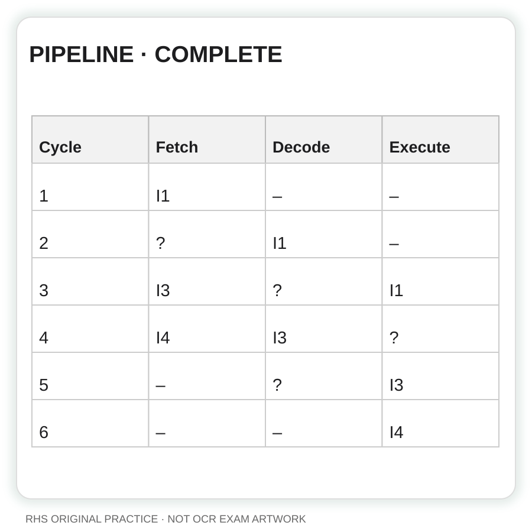
Q6(a) · Pipeline · 4 marks
Fill the four missing instruction identifiers across six cycles of Fetch, Decode and Execute. No stalls.
Answer · draft marking
Reading order: I2, I2, I2, I4.
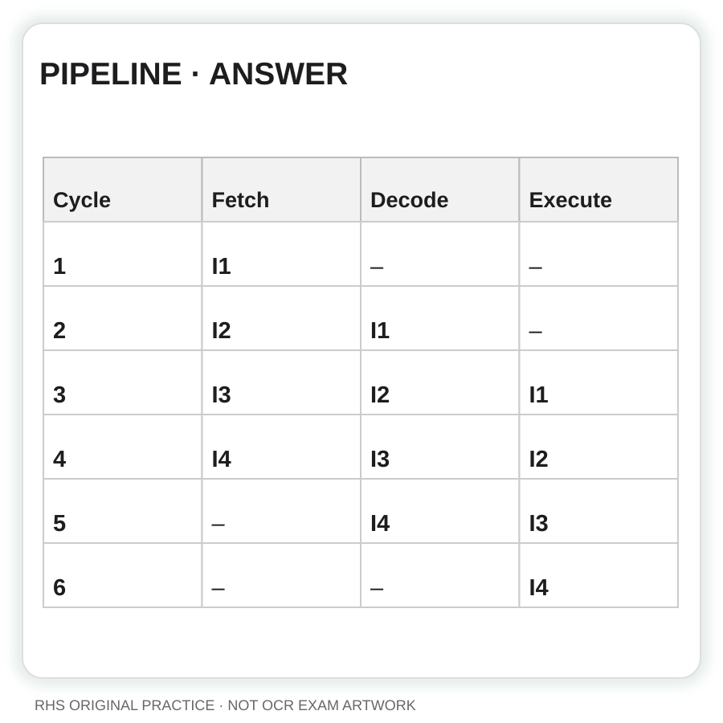
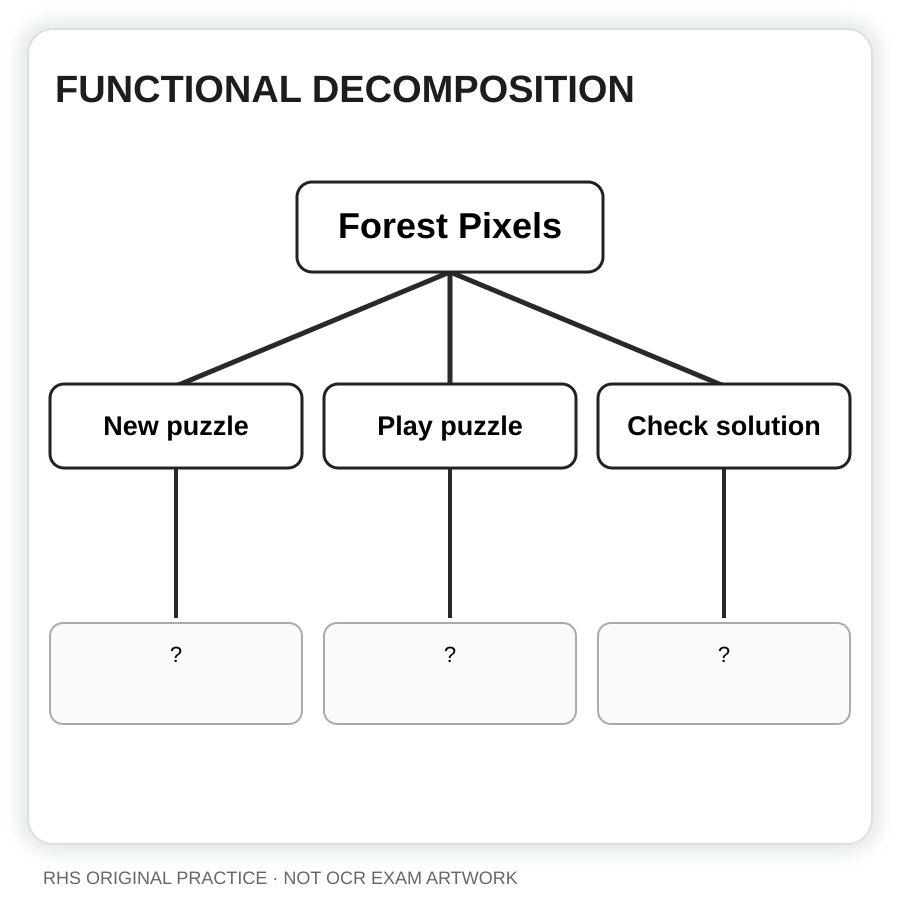
Q8(a)(i) · Decomposition · 3 marks
Add one suitable operation beneath each of New puzzle, Play puzzle and Check solution.
Answer · draft marking
Select puzzle/display empty grid; toggle cell; compare grids and show feedback.
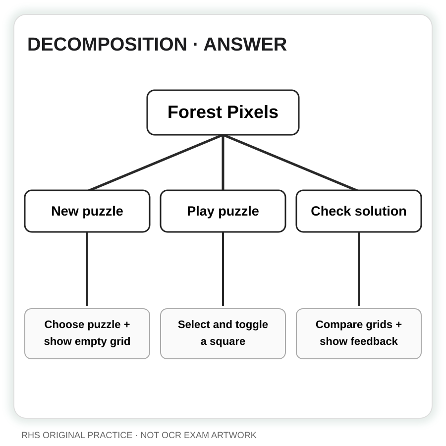
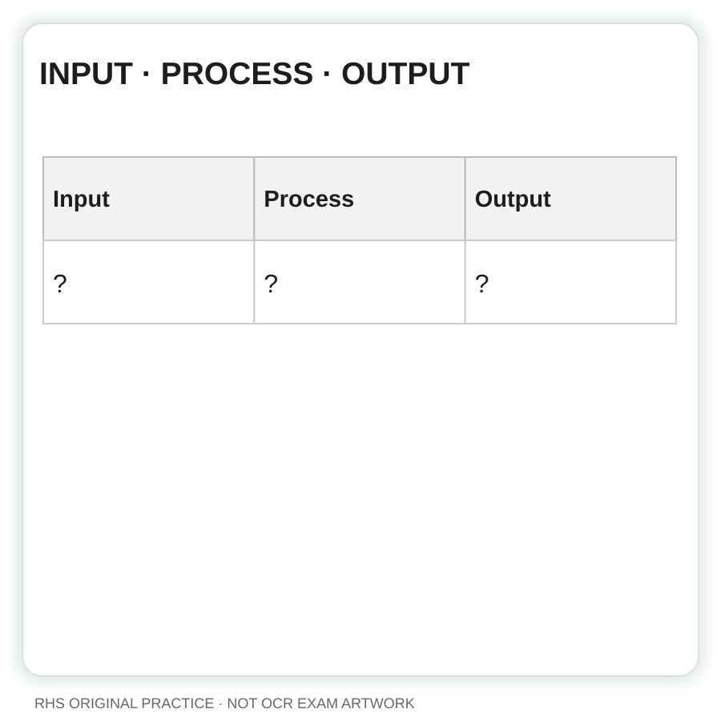
Q8(a)(iii) · Input/process/output · 3 marks
Identify one input, one process and one output for the 5×5 picture-logic game.
Answer · draft marking
Example: select a cell; toggle its stored bit; redraw the grid.
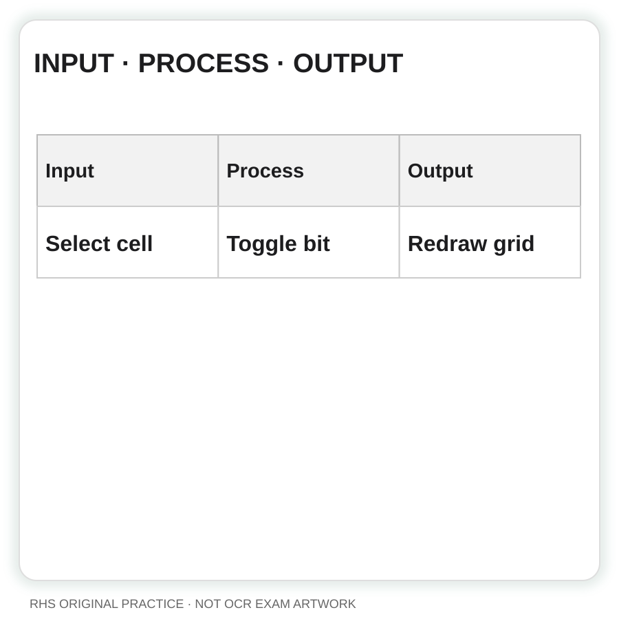
Forest Pixels · rowClue()
Complete all five blanks. Return space-separated black-run lengths, or "0" for an all-white row.
01 function rowClue(solution, row)
02 output = ""
03 count = 0
04 for col = 0 to 4
05 if solution[row,col] == _____ then
06 count = count + 1
07 elseif count > 0 then
08 if output != "" then output = output + " " endif
09 output = output + str(_____)
10 count = _____
11 endif
12 next col
13 if count > 0 then
14 if output != "" then output = output + " " endif
15 output = output + str(_____)
16 endif
17 if output == "" then output = _____ endif
18 return output
19 endfunctionWorked answer · 5 marks
Five answers in order: 1; count; 0; count; "0".
01 function rowClue(solution, row)
02 output = ""
03 count = 0
04 for col = 0 to 4
05 if solution[row,col] == 1 then
06 count = count + 1
07 elseif count > 0 then
08 if output != "" then output = output + " " endif
09 output = output + str(count)
10 count = 0
11 endif
12 next col
13 if count > 0 then
14 if output != "" then output = output + " " endif
15 output = output + str(count)
16 endif
17 if output == "" then output = "0" endif
18 return output
19 endfunction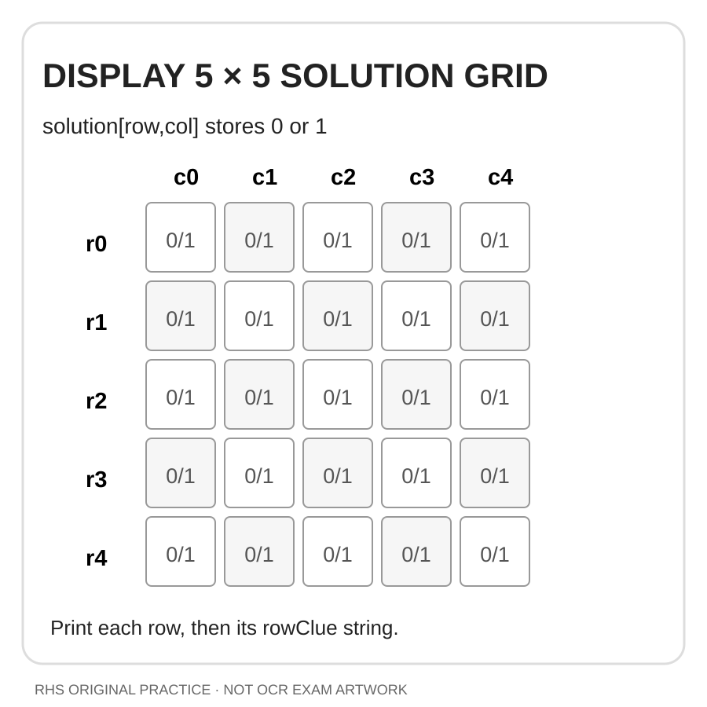
Q8(b)(iv) · Display rows · 6 marks
Write displayRows(solution) using nested loops to print the five binary cells in each row, then rowClue(solution,row).
Answer · draft marking
Nested loops, five rows and columns, append each value, print each row and its clue.
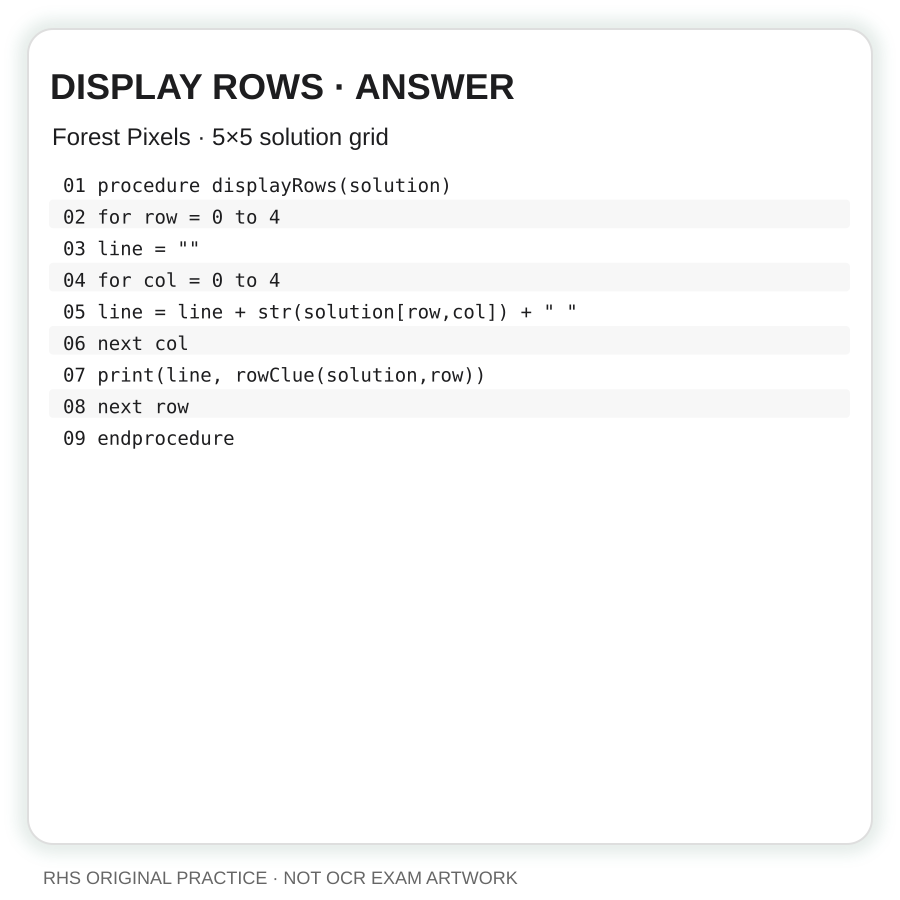
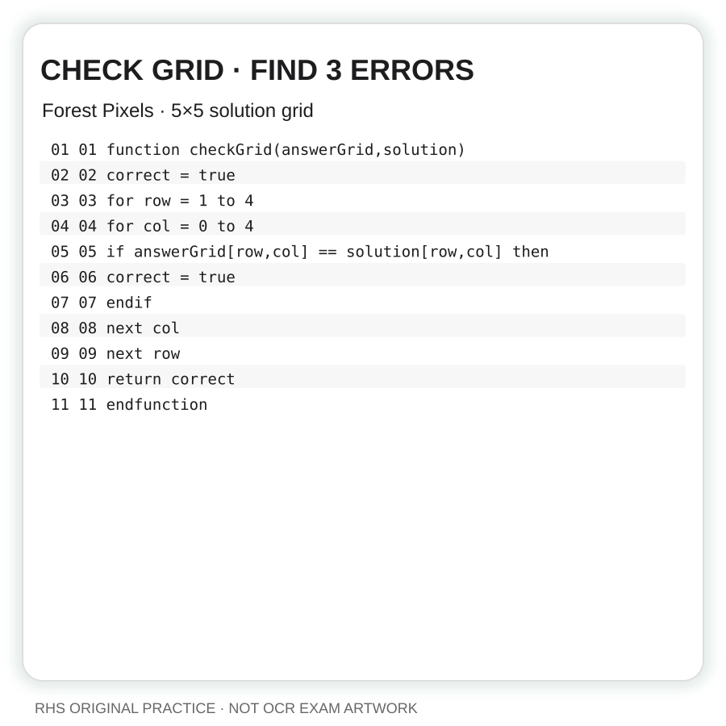
Q8(b)(v) · Debug checker · 3 marks
Identify the three incorrect lines in the supplied checkGrid code and write each full corrected line.
Answer · draft marking
03: for row = 0 to 4; 05: if answerGrid[row,col] != solution[row,col] then; 06: correct = false.
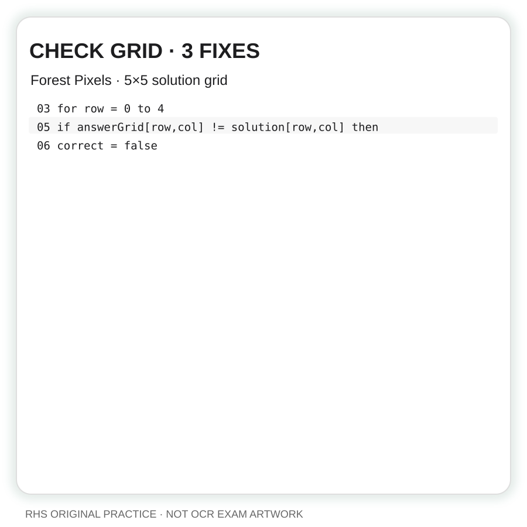
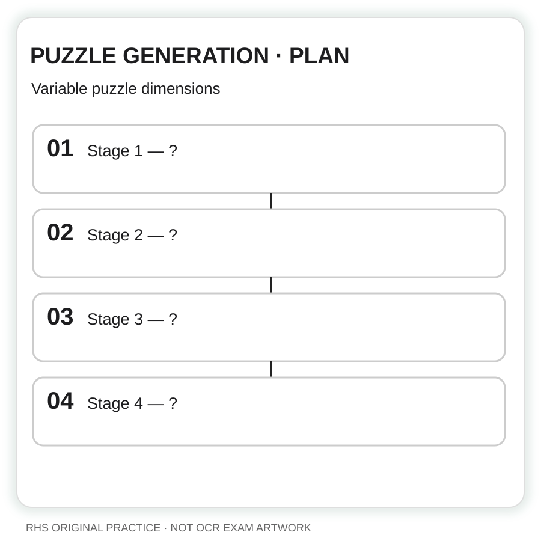
Q8(d) · Puzzle generation · 4 marks
Describe four stages for generating a solvable puzzle from user-selected row and column counts.
Answer · draft marking
Validate size; allocate arrays; generate reference binary solution; derive compatible clues and display blank grid.
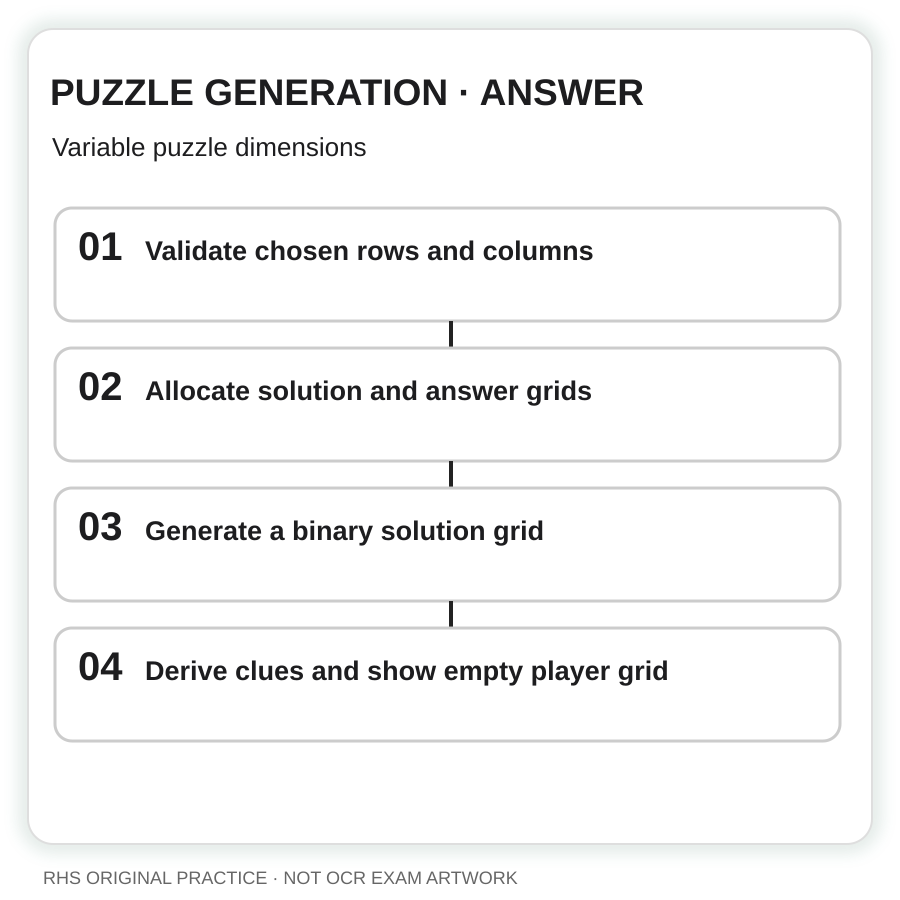